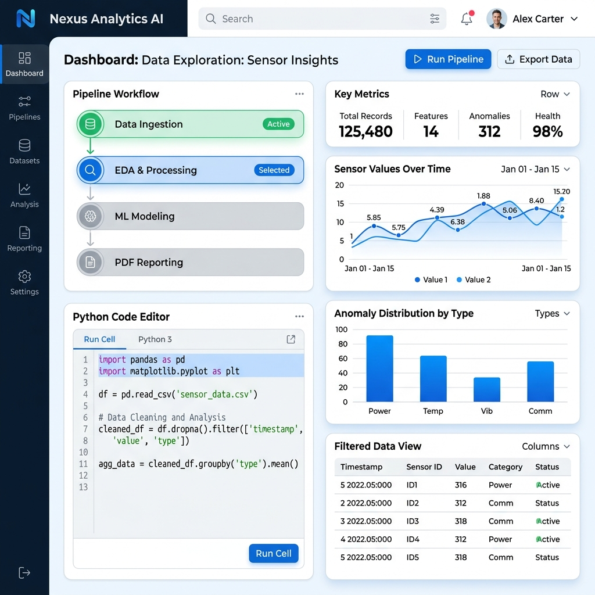
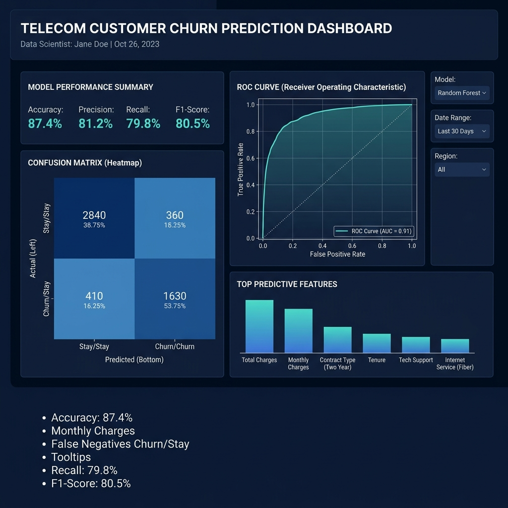
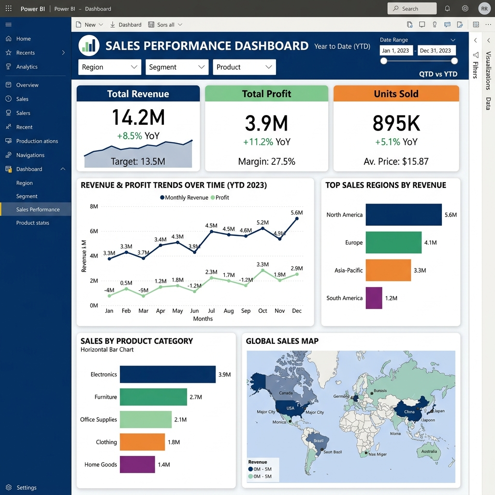
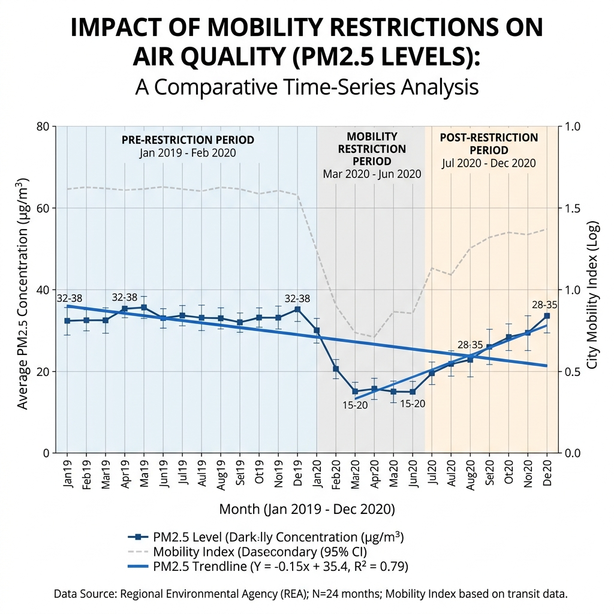

BI Dashboards
Power BI and Excel dashboards that turn KPIs, filters, and trends into clean decision views.
Data Analyst | Master of Science in Data Analytics Student | Python, SQL & Power BI
I turn raw data into clear insights, interactive dashboards, and business-focused predictive solutions. Specializing in bridging technical analysis with executive decision-making.
A look into my professional background, goals, and experience.
I am a Data Analytics master’s student at Technological University Dublin with over 3 years of professional experience as an Analyst. My background includes data quality checks, survey programming, reporting, client communication, and working with structured data.
I enjoy cleaning messy datasets, exploring complex patterns, building interactive dashboard reporting, developing machine learning models, and presenting findings in a clear, narrative-driven, and business-friendly way.
I am currently looking for Data Analyst, BI Analyst, Junior Data Scientist, and Business Analyst opportunities in Ireland and Europe.
Corporate experience managing data workflows, validation, and analytics
Specializing in Data Mining, ML, BI, and Organizational Decision Making
Actively interviewing for Graduate and Entry-level analytical roles
Clear, practical analytics support from raw datasets to business-ready decisions.
Power BI and Excel dashboards that turn KPIs, filters, and trends into clean decision views.
Machine learning workflows for churn, classification, forecasting, model comparison, and evaluation.
Cleaning, validation, transformation, and survey-data checks built from analyst delivery experience.
Readable summaries, stakeholder-ready narratives, and analytical findings with business context.
My toolkit for working with data, modeling, building dashboards, and communicating insights.
Real-world datasets and data products demonstrating analysis, machine learning, and BI dashboards.
Hover over any project card to flip it and view the key highlights.

A Streamlit-based analytics platform that automates data ingestion, EDA, ML model comparison, NLP insights, and report generation.

A machine learning project focused on predicting telecom customer churn using customer profile, usage, and billing data.

An interactive Power BI dashboard designed to analyse sales trends, revenue performance, categories, and regional results.

A data analytics project exploring how mobility restriction patterns may relate to PM2.5 air-quality changes.
My career timeline and key professional achievements.
Academic history and foundation in Data Analytics and Computer Engineering.
I am currently open to Data Analyst, BI Analyst, Junior Data Scientist, and Business Analyst opportunities in Ireland and Europe. Feel free to contact me for job opportunities, graduate roles, internships, or data-related collaborations.
Dublin, Ireland
Master of Science in Data Analytics Student & Analyst